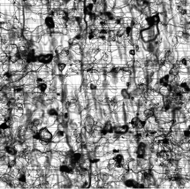
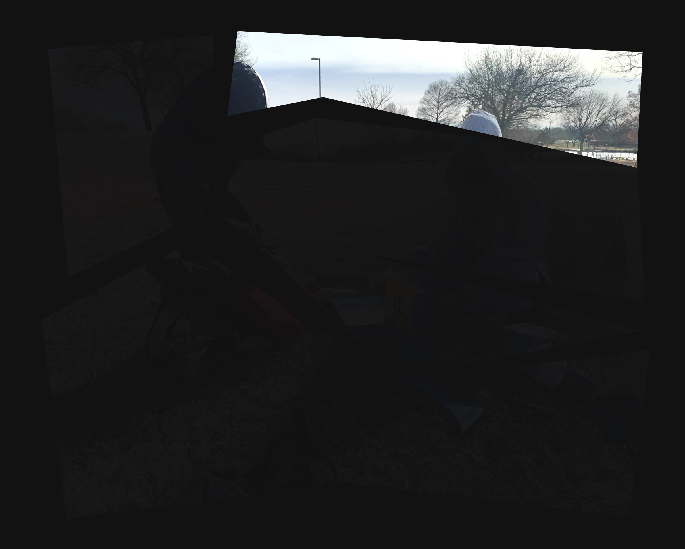

What is a (single) memory?
A piece of data, in the form of a shape, movement, image, feeling, sound (or combination).
To me, a memory on its own is not significant (unless it is traumatic).
Memory gathers meaning only in groups.



What is (the faculty of) memory?
The (traditional) image of memory as an interconnected network mostly aligns with how I perceive my own memory.
Memory consists of a vast network of nodes, which can be connected and recalled in different ways.
Thus augmenting or changing existing narratives.
Of course, the 'network' of memory is more fluid than this diagram.
Nodes and connections are dynamic, changing throughout our everyday experiences.
Nodes and connections are dynamic, changing throughout our everyday experiences.
I imagine a snapshot of memory looking like this.
this